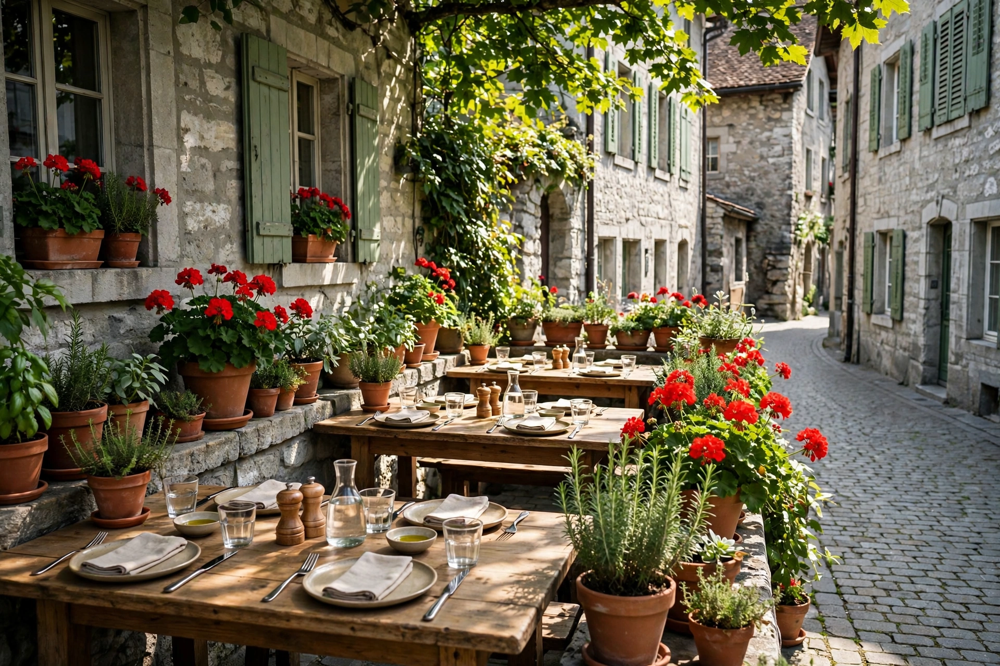
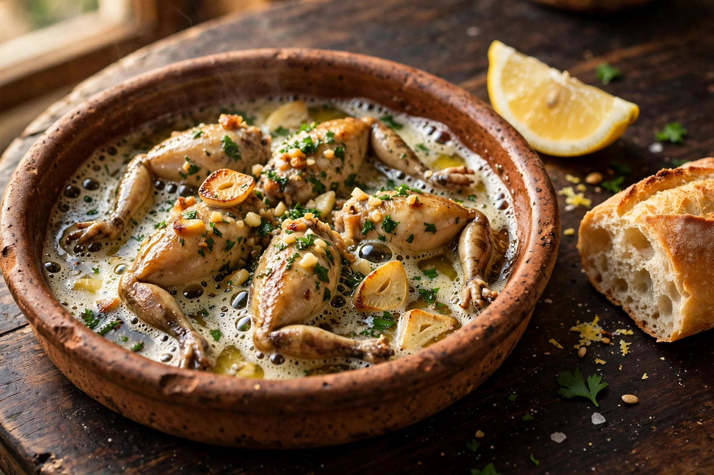
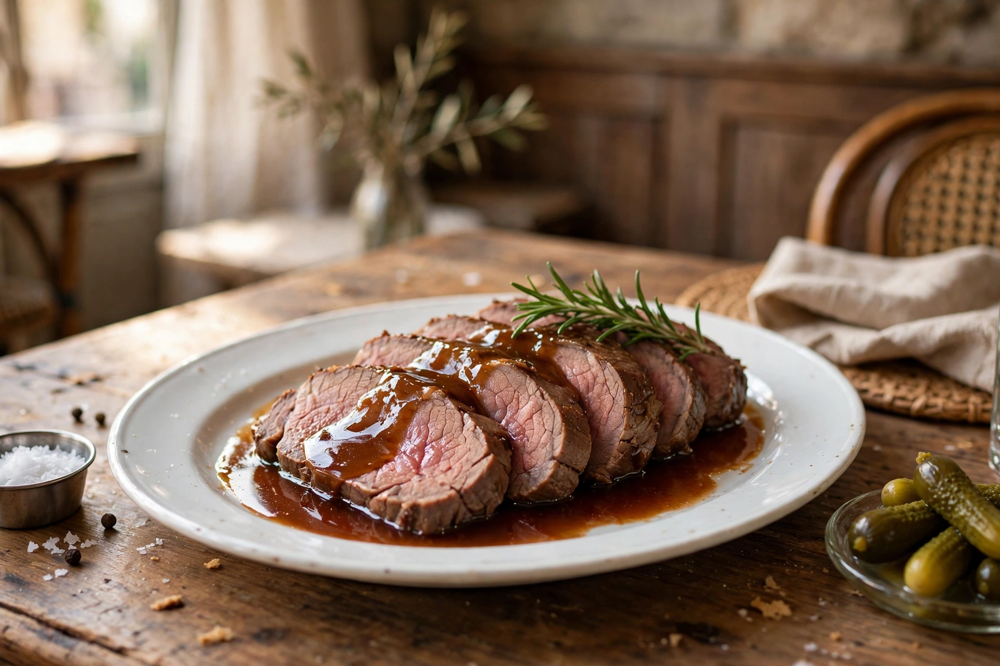
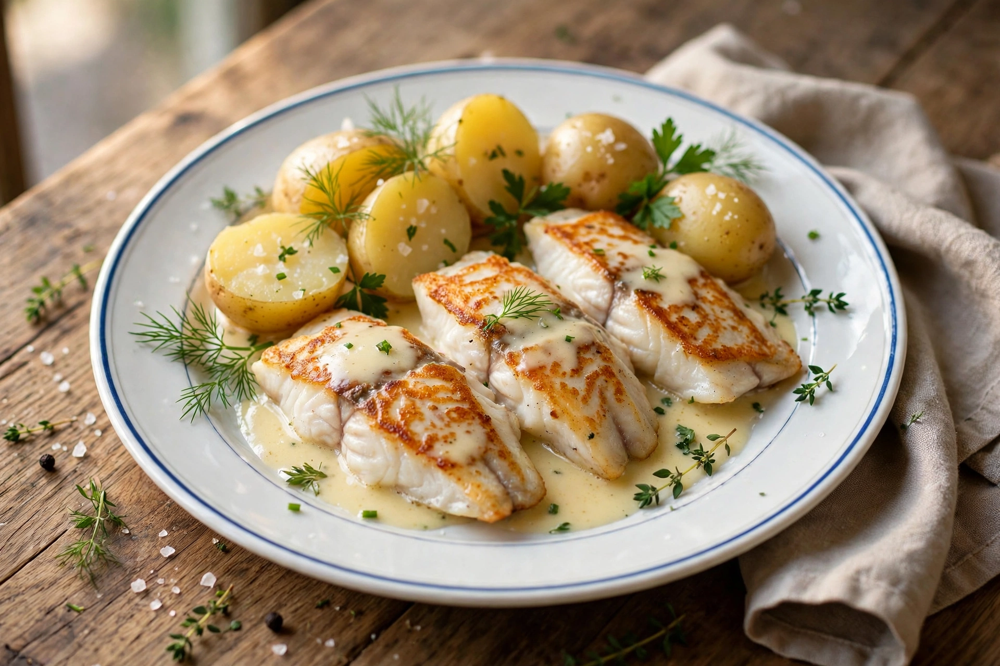
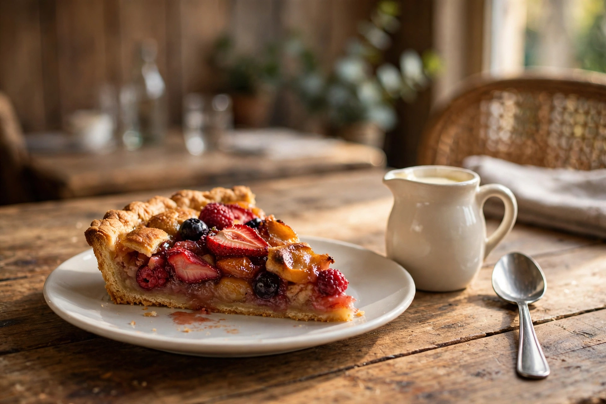
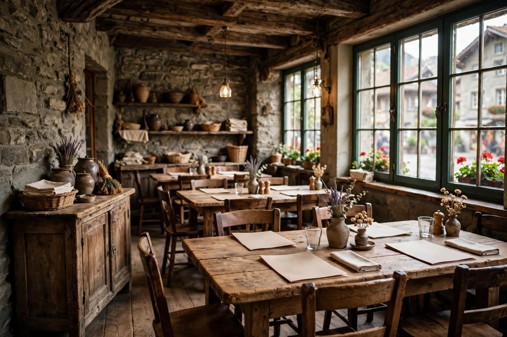

Adresse et contact
Café des Faucheurs
Rue des Granges 5
2300 La Chaux-de-Fonds
Restaurant familial et traditionnel en vieille ville de La Chaux-de-Fonds
Rue des Granges 5 · 2300 La Chaux-de-Fonds 032 964 11 00
Ce midi à la maison : plat du jour

Des plats du jour aux desserts, la cuisine se fait sur place, sans chichis.
Les menus se composent avec des produits frais de la région.
Un coin calme et fleuri, au cœur des ruelles de la vieille ville.
Une carte courte, composée avec les produits du moment. Le midi est le cœur de la maison : un plat du jour, quelques plats bien faits, et des desserts maison.
Plat du jour
Composé chaque jour avec les produits frais de la région.
Menus du midi
La carte de midi, courte et composée le jour même.
Cuisses de grenouilles
Fraîches et préparées maison : un vrai régal, disent les convives.
Roastbeef
Le classique de la maison, que les convives qualifient de magique.
Entrecôte
L’entrecôte, simplement préparée, pour les amateurs de viande.
Filets au beurre blanc
Des filets de poisson nappés d’un beurre blanc, tout en finesse.
Terrine
La terrine, en entrée, comme autrefois.
Porchetta
La porchetta, rôtie lentement, fondante et parfumée.
Frites
Les frites, dorées, en accompagnement des plats.
Desserts maison
Les desserts sont faits maison, et les convives s’en souviennent.
Cette carte présente les plats que la maison sert régulièrement. Les prix ne sont pas publiés en ligne : ils seront ajoutés ici dès que la maison les aura confirmés. En attendant, appelez-nous, nous vous dirons tout et nous prendrons votre réservation.
Appeler la maisonLes plats et les lieux qui font la maison, en quelques images.





Faites glisser pour voir la suite
Au cœur de la vieille ville de La Chaux-de-Fonds, le Café des Faucheurs est un restaurant familial et traditionnel. « Pas de chichis, tout dans la qualité » : c’est ainsi qu’un convive résume la maison, et l’accueil y est chaleureux.
Le midi, la cuisine compose ses menus avec des produits frais de la région : un plat du jour, une courte carte, et des classiques préparés maison, des cuisses de grenouilles au roastbeef. Les desserts, eux aussi, sont faits maison.
Aux beaux jours, la terrasse fleurie offre un coin de calme dans les ruelles de la vieille ville, à deux pas du damier des rues de la ville horlogère, classée au patrimoine mondial de l’UNESCO.
Plats et desserts sont préparés maison, avec des produits frais de la région.
Plat du jour et menus du midi : c’est le cœur de la maison.
Un coin calme et fleuri en vieille ville, dès les beaux jours.
Un coup de téléphone suffit pour réserver votre table.
Ici, la réservation se fait par téléphone, simplement.
Appelez le 032 964 11 00.
Dites le jour et le nombre de convives.
Nous gardons votre table, en salle ou en terrasse.
Café des Faucheurs
Rue des Granges 5
2300 La Chaux-de-Fonds
Les horaires de la maison ne sont pas publiés de façon fiable en ligne : ils seront affichés ici dès qu’ils seront confirmés. Pour connaître les heures du jour, appelez-nous.
Demander les horairesLa maison se trouve rue des Granges, dans la vieille ville de La Chaux-de-Fonds, la ville horlogère classée au patrimoine mondial de l’UNESCO avec Le Locle.
Ouvrir dans Google Maps